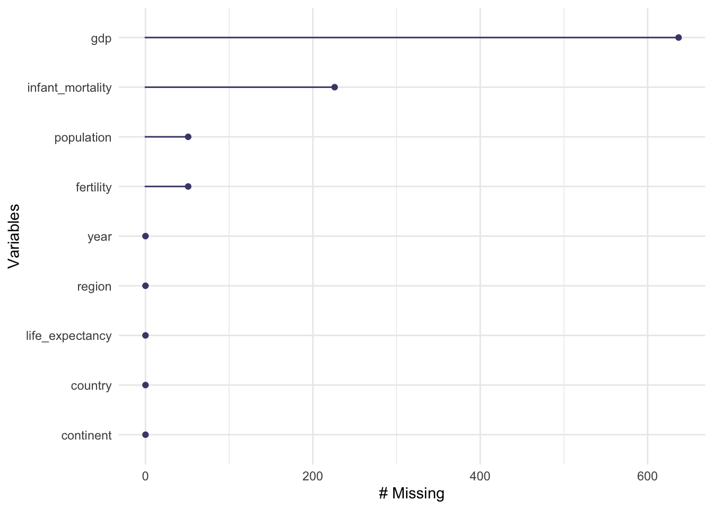
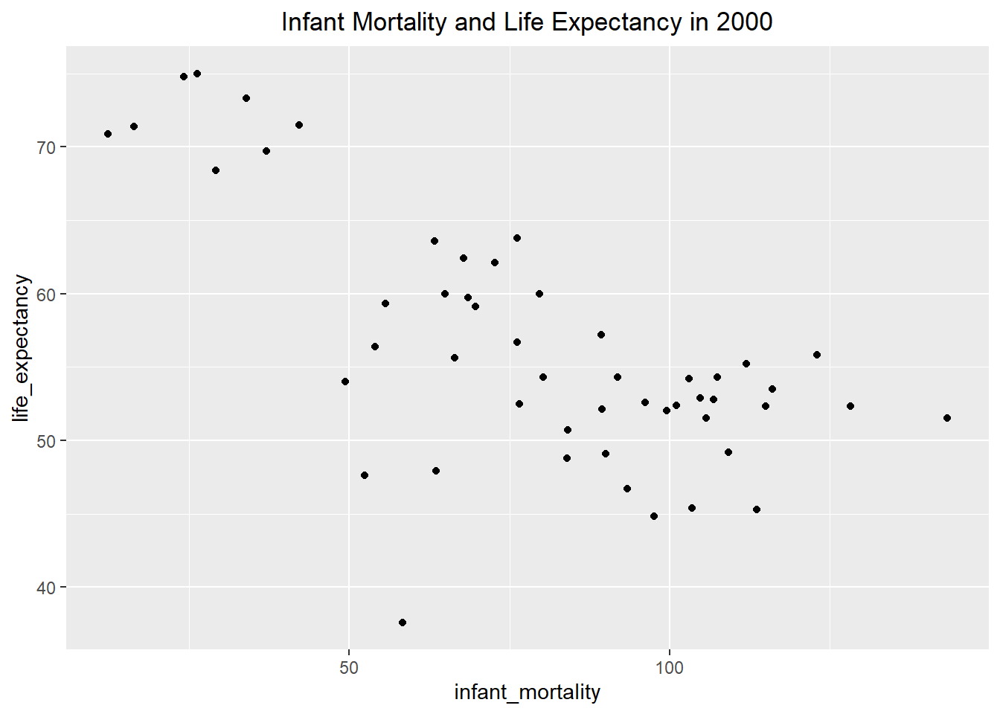
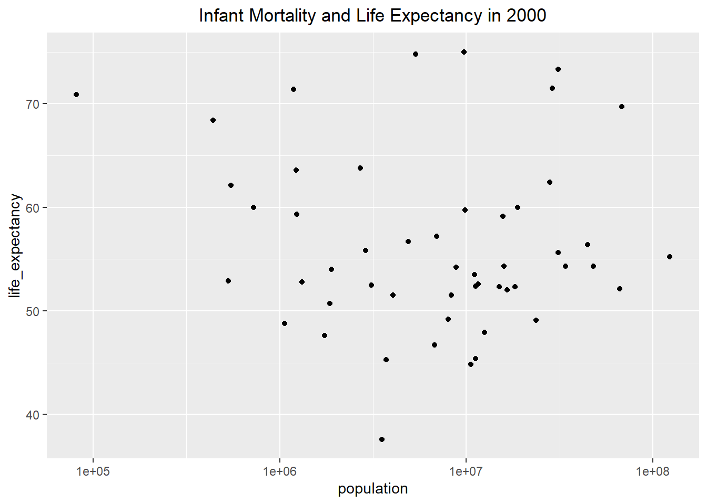
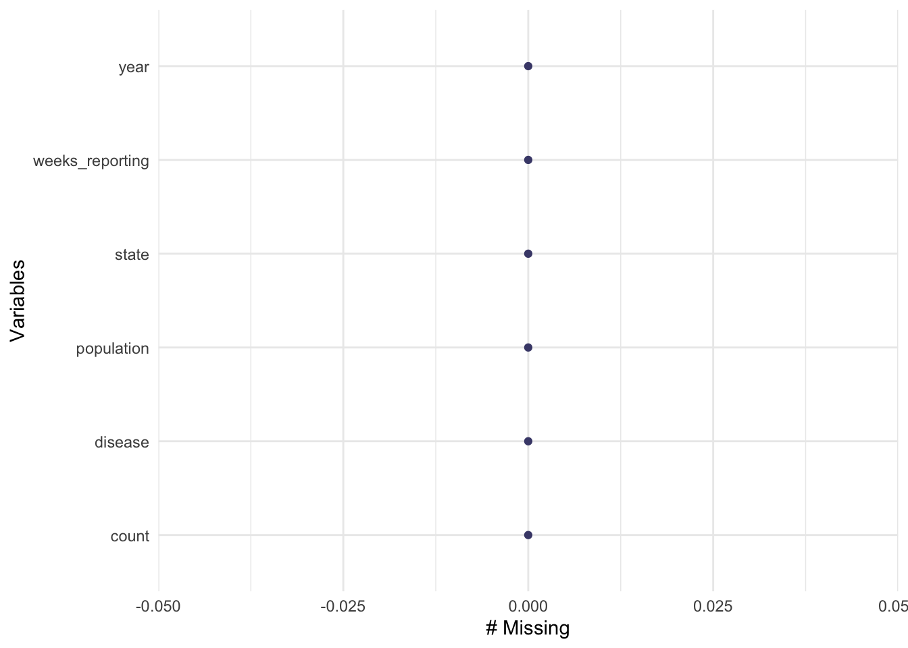
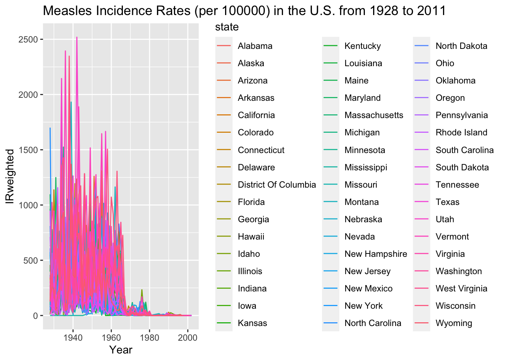
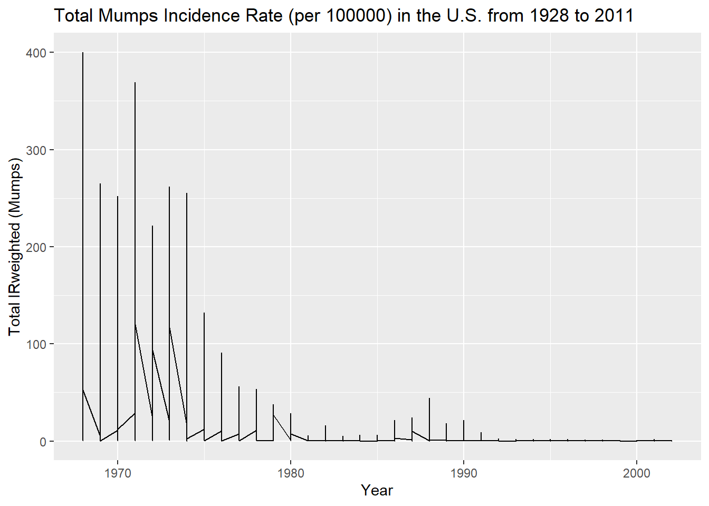
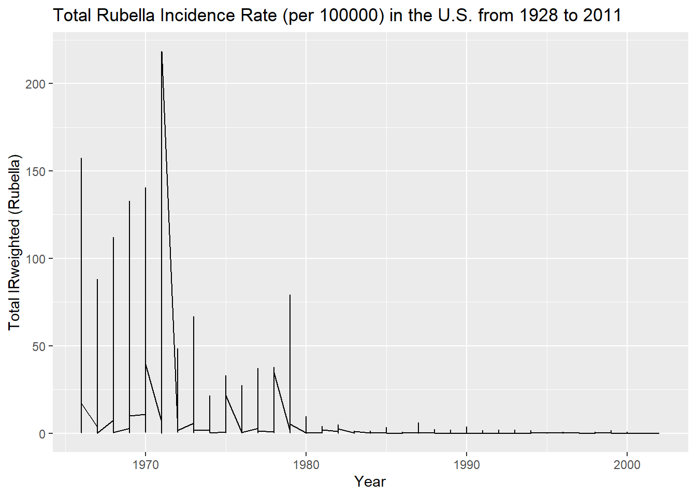
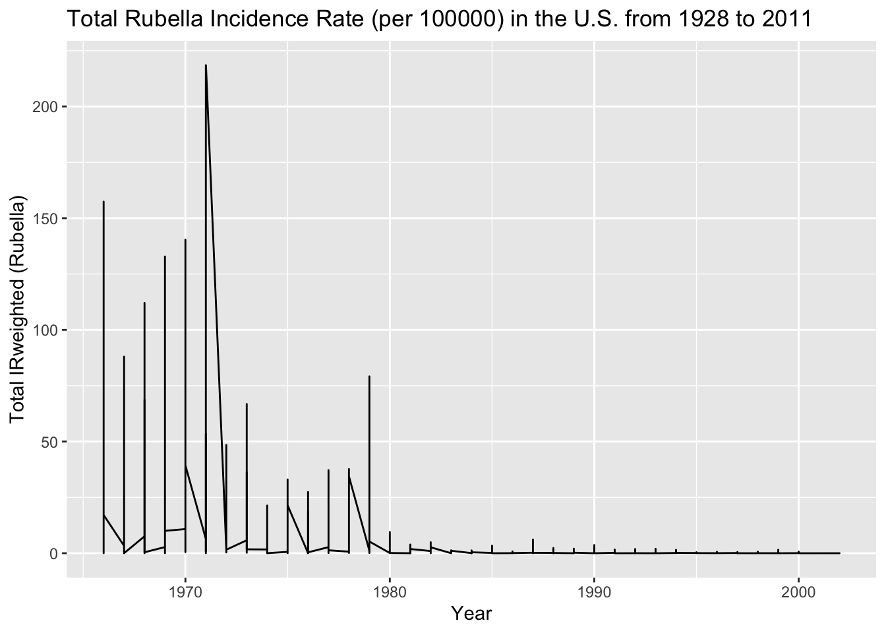

This section will be utilized to learn basic R coding skills.
Data from the ds labs package will be utilized for this practice. The renv package is a great resource for keeping track of all the packages used within a project. I chose to install it here, so I can use it on class exercises and the final project. I loaded tidyverse to practice processing data and ggplot2 to visualize the processed data later in this exercise. I loaded naniar to determine missingness of the data.
library(dslabs)library(tidyverse)
── Attaching core tidyverse packages ──────────────────────── tidyverse 2.0.0 ──
✔ dplyr 1.1.2 ✔ readr 2.1.4
✔ forcats 1.0.0 ✔ stringr 1.5.0
✔ ggplot2 3.4.4 ✔ tibble 3.2.1
✔ lubridate 1.9.2 ✔ tidyr 1.3.0
✔ purrr 1.0.2
── Conflicts ────────────────────────────────────────── tidyverse_conflicts() ──
✖ dplyr::filter() masks stats::filter()
✖ dplyr::lag() masks stats::lag()
ℹ Use the conflicted package (<http://conflicted.r-lib.org/>) to force all conflicts to become errors
library(ggplot2)library(naniar)
Exploring Gapminder
I will explore the gapminder dataset included in this pacakge with the help(), str(), summary(), and class() functions.
help(gapminder)str(gapminder)
'data.frame': 10545 obs. of 9 variables:
$ country : Factor w/ 185 levels "Albania","Algeria",..: 1 2 3 4 5 6 7 8 9 10 ...
$ year : int 1960 1960 1960 1960 1960 1960 1960 1960 1960 1960 ...
$ infant_mortality: num 115.4 148.2 208 NA 59.9 ...
$ life_expectancy : num 62.9 47.5 36 63 65.4 ...
$ fertility : num 6.19 7.65 7.32 4.43 3.11 4.55 4.82 3.45 2.7 5.57 ...
$ population : num 1636054 11124892 5270844 54681 20619075 ...
$ gdp : num NA 1.38e+10 NA NA 1.08e+11 ...
$ continent : Factor w/ 5 levels "Africa","Americas",..: 4 1 1 2 2 3 2 5 4 3 ...
$ region : Factor w/ 22 levels "Australia and New Zealand",..: 19 11 10 2 15 21 2 1 22 21 ...
summary(gapminder)
country year infant_mortality life_expectancy
Albania : 57 Min. :1960 Min. : 1.50 Min. :13.20
Algeria : 57 1st Qu.:1974 1st Qu.: 16.00 1st Qu.:57.50
Angola : 57 Median :1988 Median : 41.50 Median :67.54
Antigua and Barbuda: 57 Mean :1988 Mean : 55.31 Mean :64.81
Argentina : 57 3rd Qu.:2002 3rd Qu.: 85.10 3rd Qu.:73.00
Armenia : 57 Max. :2016 Max. :276.90 Max. :83.90
(Other) :10203 NA's :1453
fertility population gdp continent
Min. :0.840 Min. :3.124e+04 Min. :4.040e+07 Africa :2907
1st Qu.:2.200 1st Qu.:1.333e+06 1st Qu.:1.846e+09 Americas:2052
Median :3.750 Median :5.009e+06 Median :7.794e+09 Asia :2679
Mean :4.084 Mean :2.701e+07 Mean :1.480e+11 Europe :2223
3rd Qu.:6.000 3rd Qu.:1.523e+07 3rd Qu.:5.540e+10 Oceania : 684
Max. :9.220 Max. :1.376e+09 Max. :1.174e+13
NA's :187 NA's :185 NA's :2972
region
Western Asia :1026
Eastern Africa : 912
Western Africa : 912
Caribbean : 741
South America : 684
Southern Europe: 684
(Other) :5586
class(gapminder)
[1] "data.frame"
Processing Data
To create a dataset with only African countries, I need to view the dataset using head() to determine a variable name that I can use to filter the dataset. Once I found “continent”, I filtered for Africa. The str() function shows me there are 2,907 observations of 9 variables, which means 2,907 African countries are included in the gapminder dataset. The summary() function allowed me to see what Dr. Handle meant by R keeping all the continent categories but plugging in a zero as a placeholder.
head(gapminder) ##I see a variable name called continent that I will use to filter the dataset
country year infant_mortality life_expectancy fertility
1 Albania 1960 115.40 62.87 6.19
2 Algeria 1960 148.20 47.50 7.65
3 Angola 1960 208.00 35.98 7.32
4 Antigua and Barbuda 1960 NA 62.97 4.43
5 Argentina 1960 59.87 65.39 3.11
6 Armenia 1960 NA 66.86 4.55
population gdp continent region
1 1636054 NA Europe Southern Europe
2 11124892 13828152297 Africa Northern Africa
3 5270844 NA Africa Middle Africa
4 54681 NA Americas Caribbean
5 20619075 108322326649 Americas South America
6 1867396 NA Asia Western Asia
africadata <- gapminder %>%filter(continent =="Africa") ##I created a new dataset that only includes African countriesstr(africadata)
'data.frame': 2907 obs. of 9 variables:
$ country : Factor w/ 185 levels "Albania","Algeria",..: 2 3 18 22 26 27 29 31 32 33 ...
$ year : int 1960 1960 1960 1960 1960 1960 1960 1960 1960 1960 ...
$ infant_mortality: num 148 208 187 116 161 ...
$ life_expectancy : num 47.5 36 38.3 50.3 35.2 ...
$ fertility : num 7.65 7.32 6.28 6.62 6.29 6.95 5.65 6.89 5.84 6.25 ...
$ population : num 11124892 5270844 2431620 524029 4829291 ...
$ gdp : num 1.38e+10 NA 6.22e+08 1.24e+08 5.97e+08 ...
$ continent : Factor w/ 5 levels "Africa","Americas",..: 1 1 1 1 1 1 1 1 1 1 ...
$ region : Factor w/ 22 levels "Australia and New Zealand",..: 11 10 20 17 20 5 10 20 10 10 ...
summary(africadata)
country year infant_mortality life_expectancy
Algeria : 57 Min. :1960 Min. : 11.40 Min. :13.20
Angola : 57 1st Qu.:1974 1st Qu.: 62.20 1st Qu.:48.23
Benin : 57 Median :1988 Median : 93.40 Median :53.98
Botswana : 57 Mean :1988 Mean : 95.12 Mean :54.38
Burkina Faso: 57 3rd Qu.:2002 3rd Qu.:124.70 3rd Qu.:60.10
Burundi : 57 Max. :2016 Max. :237.40 Max. :77.60
(Other) :2565 NA's :226
fertility population gdp continent
Min. :1.500 Min. : 41538 Min. :4.659e+07 Africa :2907
1st Qu.:5.160 1st Qu.: 1605232 1st Qu.:8.373e+08 Americas: 0
Median :6.160 Median : 5570982 Median :2.448e+09 Asia : 0
Mean :5.851 Mean : 12235961 Mean :9.346e+09 Europe : 0
3rd Qu.:6.860 3rd Qu.: 13888152 3rd Qu.:6.552e+09 Oceania : 0
Max. :8.450 Max. :182201962 Max. :1.935e+11
NA's :51 NA's :51 NA's :637
region
Eastern Africa :912
Western Africa :912
Middle Africa :456
Northern Africa :342
Southern Africa :285
Australia and New Zealand: 0
(Other) : 0
To create two new objects from the ‘africadata’ object with only two columns each, I used the select() function to choose the columns I wanted to keep. The first object, ‘IMLE’, contains the infant mortality rates and life expectancies for each African country. I used the str() function to see there are 2907 observations of 2 variables, and the summary() function provides 5 data points for each numeric variable. The second object, “PLE’, contains the population and life expectancies for each African county. Similarly, I used str() to confirm there are 2907 observations of 2 variables, and the summary() function to learn about the range of each variable.
IMLE <- africadata %>%##store a new object using the arrow notationselect("infant_mortality", "life_expectancy") ##pipe in the filtered dataset and select specific columns str(IMLE) ##confirm there are only 2 variables
'data.frame': 2907 obs. of 2 variables:
$ infant_mortality: num 148 208 187 116 161 ...
$ life_expectancy : num 47.5 36 38.3 50.3 35.2 ...
summary(IMLE) ##observe the range of each numerical variable
infant_mortality life_expectancy
Min. : 11.40 Min. :13.20
1st Qu.: 62.20 1st Qu.:48.23
Median : 93.40 Median :53.98
Mean : 95.12 Mean :54.38
3rd Qu.:124.70 3rd Qu.:60.10
Max. :237.40 Max. :77.60
NA's :226
PLE <- africadata %>%##store a new object using the arrow notationselect("population", "life_expectancy") ##pipe in the filtered dataset and select specific columns str(PLE) ##confirm there are only 2 variables
'data.frame': 2907 obs. of 2 variables:
$ population : num 11124892 5270844 2431620 524029 4829291 ...
$ life_expectancy: num 47.5 36 38.3 50.3 35.2 ...
summary(PLE) ##observe the range of each numerical variable
population life_expectancy
Min. : 41538 Min. :13.20
1st Qu.: 1605232 1st Qu.:48.23
Median : 5570982 Median :53.98
Mean : 12235961 Mean :54.38
3rd Qu.: 13888152 3rd Qu.:60.10
Max. :182201962 Max. :77.60
NA's :51
Plotting
To visualize the relationship between the two variables included in each of these objects, I will plot them using ggplot(). Using the IMLE object, I plotted infant mortality on the x axis and life expenctancy on the y axis using the aesthetics filter with ggplot. I added geom-point() to plot the data as points. I also chose to include a title, which I centered on the graph, to make the contents of the plot even clearer. This plot shows the inverse relationship between life expectancy and infant mortality. The graph shows a strong inverse relationship with only 3 major outliers. The majority of observations fall between an infant mortality rate of 30 to 150.
IMLE %>%ggplot(aes(x=infant_mortality, y=life_expectancy)) +##use aesthetic layer to set the axis variablesgeom_point() +##create a scatter plotlabs(title ="Life Expectancy as a Function of Infant Mortality") +##label the graph with a titletheme(plot.title =element_text(hjust =0.5)) ##center the title on the graph
I followed a similar process to plot life expectancy based on population using the PLE object. I used ggplot() again along with geom_point() to plot the data points. I used the same technique to create a title centered on the graph. I also added the scale_x_log10() function to convert the numeric population variable to the logarithmic scale, which helps to create a cleaner visualization. The graph shows the most observations around a population of 1 million with a life expectancy ranging from 40 to 60. There is one major outlier on the graph, but most observations are clustered to create easily definable streaks. The streaks of data in both of these graphs correspond to observations in each African country over the years included in the dataset, which range from 1960 to 2016. As time passes, life expectancy increases which causes the population size to increase. Since infant mortality has decreased over this time period, life expectancy is increasing. These trends show up as streaks in the data because each country’s observations are grouped together over time.
PLE %>%ggplot(aes(x=population, y=life_expectancy)) +##use aesthetic layer to set the axis variablesgeom_point() +##create a scatter plotlabs(title ="Life Expectancy as a Function of Population") +##label the graph with a titletheme(plot.title =element_text(hjust =0.5)) +##center the titlescale_x_log10() ##change the x-axis to the log scale
Finding out which observations have missing data is an important part of data analysis. I used gg_miss_var() to visualize which variables were missing information. While GDP accounts for the most missing observations, infant_mortality is the variable with the second most missing values. To determine which years have missing infant_mortality data, I used AI to learn how to use dplyr functions to filter for the specific missing data I am looking for. I filtered for observations where infant mortality rate was missing, and I selected the year column since that is the variable I am interested in. After printing the data, I realized it showed all 226 observations by year, so I used the unique() function to more efficiently determine which years had at least 1 missing infant mortality rate observation. Infant mortality rate is missing from 1960 to 1981 and again in 2016.
gg_miss_var(africadata) ##explore missingness of the data

missing_years <- africadata %>%filter(is.na(infant_mortality)) %>%##find observations of infant mortality that are missing select(year) ##keep only the year column of the observations with missing dataprint(missing_years) ##view the years with missing data
After choosing 2000 for the year to study infant mortality rate based on missingness in the data, I filtered for observations made during 2000 only. I used the dim() function to confirm that I have 51 observations of 9 variables. The str() function provides the variable type for each variable, and the summary() function provides more details for each variable.
year2000 <- africadata %>%filter(year =="2000") ##create a new object with only observations from the year 2000dim(year2000) ##confirm dimensions of year2000
[1] 51 9
str(year2000) ##observe structure of year2000
'data.frame': 51 obs. of 9 variables:
$ country : Factor w/ 185 levels "Albania","Algeria",..: 2 3 18 22 26 27 29 31 32 33 ...
$ year : int 2000 2000 2000 2000 2000 2000 2000 2000 2000 2000 ...
$ infant_mortality: num 33.9 128.3 89.3 52.4 96.2 ...
$ life_expectancy : num 73.3 52.3 57.2 47.6 52.6 46.7 54.3 68.4 45.3 51.5 ...
$ fertility : num 2.51 6.84 5.98 3.41 6.59 7.06 5.62 3.7 5.45 7.35 ...
$ population : num 31183658 15058638 6949366 1736579 11607944 ...
$ gdp : num 5.48e+10 9.13e+09 2.25e+09 5.63e+09 2.61e+09 ...
$ continent : Factor w/ 5 levels "Africa","Americas",..: 1 1 1 1 1 1 1 1 1 1 ...
$ region : Factor w/ 22 levels "Australia and New Zealand",..: 11 10 20 17 20 5 10 20 10 10 ...
summary(year2000) ##view summaries of variables included in year 2000
country year infant_mortality life_expectancy
Algeria : 1 Min. :2000 Min. : 12.30 Min. :37.60
Angola : 1 1st Qu.:2000 1st Qu.: 60.80 1st Qu.:51.75
Benin : 1 Median :2000 Median : 80.30 Median :54.30
Botswana : 1 Mean :2000 Mean : 78.93 Mean :56.36
Burkina Faso: 1 3rd Qu.:2000 3rd Qu.:103.30 3rd Qu.:60.00
Burundi : 1 Max. :2000 Max. :143.30 Max. :75.00
(Other) :45
fertility population gdp continent
Min. :1.990 Min. : 81154 Min. :2.019e+08 Africa :51
1st Qu.:4.150 1st Qu.: 2304687 1st Qu.:1.274e+09 Americas: 0
Median :5.550 Median : 8799165 Median :3.238e+09 Asia : 0
Mean :5.156 Mean : 15659800 Mean :1.155e+10 Europe : 0
3rd Qu.:5.960 3rd Qu.: 17391242 3rd Qu.:8.654e+09 Oceania : 0
Max. :7.730 Max. :122876723 Max. :1.329e+11
region
Eastern Africa :16
Western Africa :16
Middle Africa : 8
Northern Africa : 6
Southern Africa : 5
Australia and New Zealand: 0
(Other) : 0
More plotting
I made the same plots as above, excpet there is only data from the year 2000 this time. I made the same design choices to create a clear plot using labs() and theme() to visualize Infant Morality and Life Expectancy in 2000 and Population and Life Expectancy in 2000. Infant mortality and life expectancy still show an inverse relationship, but the relationship between population and life expectancy is no longer visible.
year2000 %>%ggplot(aes(x=infant_mortality, y=life_expectancy)) +##use aesthetic layer to set the axis variablesgeom_point() +##create a scatter plotlabs(title ="Infant Mortality and Life Expectancy in 2000") +##label the graph with a titletheme(plot.title =element_text(hjust =0.5)) ##center the title

year2000 %>%ggplot(aes(x=population, y=life_expectancy)) +##use aesthetic layer to set the axis variablesgeom_point() +##create a scatter plotlabs(title ="Infant Mortality and Life Expectancy in 2000") +##label the graph with a titletheme(plot.title =element_text(hjust =0.5)) +##center the titlescale_x_log10() ##convert the x axis to log sccale

Simple model fits
To explore the relationship between population and life expectancy in 2000, I will use the lm() function with the year2000 object to create a simple model comparing life expectancy to infant mortality in fit 1 and to population in fit 2. Based on the summary() function output for fit1, we can conclude that infant mortality rate has a statistically significant effect on life expectancy because the p-value for the coefficient estimate is 2.83e-08, which is much smaller than 0.05. For every 1 unit increase in infant mortality rate, life expectancy decreases by 0.18916 years. Based on the summary() function output for fit2, we can conclude that there is not a statistically significant relationship between life expectancy and population because the p-value for the coefficient estimate is 0.616, which is much greater than 0.05.
fit1 <-lm(life_expectancy ~ infant_mortality, data = year2000) ##create a linear model with life expectancy as outcome and infant mortality as predictor and save it to an object called fit1summary(fit1) ##generate information about linear regression equation with p-values
Call:
lm(formula = life_expectancy ~ infant_mortality, data = year2000)
Residuals:
Min 1Q Median 3Q Max
-22.6651 -3.7087 0.9914 4.0408 8.6817
Coefficients:
Estimate Std. Error t value Pr(>|t|)
(Intercept) 71.29331 2.42611 29.386 < 2e-16 ***
infant_mortality -0.18916 0.02869 -6.594 2.83e-08 ***
---
Signif. codes: 0 '***' 0.001 '**' 0.01 '*' 0.05 '.' 0.1 ' ' 1
Residual standard error: 6.221 on 49 degrees of freedom
Multiple R-squared: 0.4701, Adjusted R-squared: 0.4593
F-statistic: 43.48 on 1 and 49 DF, p-value: 2.826e-08
fit2 <-lm(life_expectancy ~ population, data = year2000) ##create a linear model with life expectancy as outcome and population as predictor and save it to an object called fit2summary(fit2) ##generate information about linear regression equation with p-values
Call:
lm(formula = life_expectancy ~ population, data = year2000)
Residuals:
Min 1Q Median 3Q Max
-18.429 -4.602 -2.568 3.800 18.802
Coefficients:
Estimate Std. Error t value Pr(>|t|)
(Intercept) 5.593e+01 1.468e+00 38.097 <2e-16 ***
population 2.756e-08 5.459e-08 0.505 0.616
---
Signif. codes: 0 '***' 0.001 '**' 0.01 '*' 0.05 '.' 0.1 ' ' 1
Residual standard error: 8.524 on 49 degrees of freedom
Multiple R-squared: 0.005176, Adjusted R-squared: -0.01513
F-statistic: 0.2549 on 1 and 49 DF, p-value: 0.6159
Rachel Robertson contributed to this portion of Taylor’s portfolio.
library(dplyr)library(skimr)
Attaching package: 'skimr'
The following object is masked from 'package:naniar':
n_complete
library(tidyr) ##I begin by opening the additional libraries that I will need for this analysis
Exploratory Data Analysis
I used the dslabs reference manual on CRAN to identify a dataset that intersted me. I chose the dataset us_contagious_diseases, which contains the variables disease (factor), state (factor), year(num), weeks_reporting(num), count(num), and population(num).I will begin by exploring this dataset with the dim(), str(), and summary() functions. The libraries needed for this analysis include tidyverse, dslabs, and ggplot2, and have been opened by running the the first code chunk.
disease state year weeks_reporting
Hepatitis A:2346 Alabama : 315 Min. :1928 Min. : 0.00
Measles :3825 Alaska : 315 1st Qu.:1950 1st Qu.:31.00
Mumps :1785 Arizona : 315 Median :1975 Median :46.00
Pertussis :2856 Arkansas : 315 Mean :1971 Mean :37.38
Polio :2091 California: 315 3rd Qu.:1990 3rd Qu.:50.00
Rubella :1887 Colorado : 315 Max. :2011 Max. :52.00
Smallpox :1275 (Other) :14175
count population
Min. : 0 Min. : 86853
1st Qu.: 7 1st Qu.: 1018755
Median : 69 Median : 2749249
Mean : 1492 Mean : 4107584
3rd Qu.: 525 3rd Qu.: 4996229
Max. :132342 Max. :37607525
NA's :214
I found that there are 6 columns and 16065 rows in this dataset. These disease factors included are: Hepatitis A, Measles, Mumps, Pertussis, Polio, Rubella, and Smallpox.
For the purposes of this project, I will analyze one disease, Measels. This is because, although the U.S. is trying to erradicate the virus, vaccine undercoverage in recent years has lead to sporatic outbreaks in the U.S. in naive pockets.
str() reveals that there are 51 states listed, so I am curious what the 51st state is. To see all of the states listed I use the function, levels().
levels(us_contagious_diseases$state) ##Examine the levels of the factor called states
I found that the 51st state listed is District of Columbia. Since I am unsure if the Maryland values include or exclude District of Columbia, I will leave this state in the analysis but note this in the final figure.
summary() reveals that the years range from 1928 - 2011 and weeks reporting accounts for missing weeks. weeks reporting ranges from 0 - 52 which indicates some years with no data. I would like to find which years have missing data. A case count of 0 for any of the diseases is not necessarily missing data unless the there were 0 weeks_reporting for that year.
Before cleaning I will use gg_miss_var() to explore if there are any additional missing variables.
It seems that some population data might be missing as well so I will also have to filter the population data that has “NA” or missing data.
Cleaning the data
First, I will remove the rows with missing population data. I will do this by using the filter function.
us_contagious_diseases2 <- us_contagious_diseases %>%##create a new data framedrop_na(population) ##drop NA from the population factorgg_miss_var(us_contagious_diseases2) ##check that there are no longer missing variables

Now that the NA values for population have been dropped, we may continue to clean the data.
I will now remove the years that are missing data for weeks_reporting.I will find the identify the years that have a 0 value for weeks_reporting by using the filter() function and drop_na() function. I will then check the number of data rows using the skim() function.
us_contagious_diseases3 <- us_contagious_diseases2 %>%## creating new data frame dplyr::filter(weeks_reporting !=0) %>%##finding the weeks_reporting 0 values with dplyr and setting then to NA tidyr::drop_na(weeks_reporting) ##dropping the NA in weeks_reporting and dropping themskimr::skim(us_contagious_diseases3) ##checking the number of rows
Data summary
Name
us_contagious_diseases3
Number of rows
14228
Number of columns
6
_______________________
Column type frequency:
factor
2
numeric
4
________________________
Group variables
None
Variable type: factor
skim_variable
n_missing
complete_rate
ordered
n_unique
top_counts
disease
0
1
FALSE
7
Mea: 3319, Per: 2709, Hep: 2327, Pol: 1844
state
0
1
FALSE
51
Cal: 312, Tex: 311, Ill: 306, Mic: 306
Variable type: numeric
skim_variable
n_missing
complete_rate
mean
sd
p0
p25
p50
p75
p100
hist
year
0
1
1969.97
23.07
1928
1948
1973
1989
2011
▆▅▆▇▅
weeks_reporting
0
1
42.11
12.16
1
38
47
51
52
▁▁▁▂▇
count
0
1
1682.64
6226.76
0
17
110
677
132342
▇▁▁▁▁
population
0
1
4254904.47
4792670.73
86853
1089254
2827642
5162987
37607525
▇▁▁▁▁
The data is now clean enough for additional processing.
Processing the Data
I will find a flat incidence rate by diving count by population for each state.I will use the mutate function to create a new column called incidence.
us_contagious_diseases4 <- us_contagious_diseases3 %>%mutate(incidence = count/population) ##create variable called incidence based on count/populationsummary(us_contagious_diseases4) ##confirm variable
disease state year weeks_reporting
Hepatitis A:2327 California : 312 Min. :1928 Min. : 1.00
Measles :3319 Texas : 311 1st Qu.:1948 1st Qu.:38.00
Mumps :1576 Illinois : 306 Median :1973 Median :47.00
Pertussis :2709 Michigan : 306 Mean :1970 Mean :42.11
Polio :1844 Florida : 305 3rd Qu.:1989 3rd Qu.:51.00
Rubella :1374 Massachusetts: 302 Max. :2011 Max. :52.00
Smallpox :1079 (Other) :12386
count population incidence
Min. : 0 Min. : 86853 Min. :0.000e+00
1st Qu.: 17 1st Qu.: 1089254 1st Qu.:7.152e-06
Median : 110 Median : 2827642 Median :3.905e-05
Mean : 1683 Mean : 4254904 Mean :5.678e-04
3rd Qu.: 677 3rd Qu.: 5162987 3rd Qu.:2.538e-04
Max. :132342 Max. :37607525 Max. :2.964e-02
I am going to change raw incidence rate into incidence per 100,000, which is a standard measure and allows for easier visualization of the incidence rate.
us_contagious_diseases5 <- us_contagious_diseases4 %>%mutate(incidenceper100000 = incidence *100000) ##create new variable incidenceper100000 based on incidence times 100000summary(us_contagious_diseases4) ##confirm variable
disease state year weeks_reporting
Hepatitis A:2327 California : 312 Min. :1928 Min. : 1.00
Measles :3319 Texas : 311 1st Qu.:1948 1st Qu.:38.00
Mumps :1576 Illinois : 306 Median :1973 Median :47.00
Pertussis :2709 Michigan : 306 Mean :1970 Mean :42.11
Polio :1844 Florida : 305 3rd Qu.:1989 3rd Qu.:51.00
Rubella :1374 Massachusetts: 302 Max. :2011 Max. :52.00
Smallpox :1079 (Other) :12386
count population incidence
Min. : 0 Min. : 86853 Min. :0.000e+00
1st Qu.: 17 1st Qu.: 1089254 1st Qu.:7.152e-06
Median : 110 Median : 2827642 Median :3.905e-05
Mean : 1683 Mean : 4254904 Mean :5.678e-04
3rd Qu.: 677 3rd Qu.: 5162987 3rd Qu.:2.538e-04
Max. :132342 Max. :37607525 Max. :2.964e-02
I will add a weight to this value to account for missing weeks reported. To do this I will multiply each incidence rate by (weeks_reporting/52), where weeks_reporting is the total number of weeks where cases are counted and 52 is the total number of weeks in a year.I will call this new variable IRweighted.
us_contagious_diseases6 <- us_contagious_diseases5 %>%mutate(IRweighted = incidenceper100000*(weeks_reporting/52)) ##add weight to incidence rate per 100000 to account for differing numbers of weeks that case counts are capturedsummary(us_contagious_diseases6) ##confirm variable
disease state year weeks_reporting
Hepatitis A:2327 California : 312 Min. :1928 Min. : 1.00
Measles :3319 Texas : 311 1st Qu.:1948 1st Qu.:38.00
Mumps :1576 Illinois : 306 Median :1973 Median :47.00
Pertussis :2709 Michigan : 306 Mean :1970 Mean :42.11
Polio :1844 Florida : 305 3rd Qu.:1989 3rd Qu.:51.00
Rubella :1374 Massachusetts: 302 Max. :2011 Max. :52.00
Smallpox :1079 (Other) :12386
count population incidence incidenceper100000
Min. : 0 Min. : 86853 Min. :0.000e+00 Min. : 0.0000
1st Qu.: 17 1st Qu.: 1089254 1st Qu.:7.152e-06 1st Qu.: 0.7152
Median : 110 Median : 2827642 Median :3.905e-05 Median : 3.9055
Mean : 1683 Mean : 4254904 Mean :5.678e-04 Mean : 56.7780
3rd Qu.: 677 3rd Qu.: 5162987 3rd Qu.:2.538e-04 3rd Qu.: 25.3760
Max. :132342 Max. :37607525 Max. :2.964e-02 Max. :2964.4269
IRweighted
Min. : 0.0000
1st Qu.: 0.5211
Median : 3.1708
Mean : 53.0719
3rd Qu.: 22.7544
Max. :2518.9571
Now that I have the weighted measure of incidence rate (per 100000), I will make some exploratory figures to examine changes in Measels incidence over time for each state.
Exploratory Figures
I will plot weighted incidence rate over time in a scatter plot and add color by state to examine potential state differences.I will make a separate figure for each disease. I had to ask ChatGPT how to plot a certain category of data from a column without making a new dataframe. this is where I found the grep1(value, dataframe$var) function and structure.
Measles_plot <-ggplot(data = us_contagious_diseases6[grepl('Measles', us_contagious_diseases6$disease), ], aes(x = year, y = IRweighted, color = state)) +geom_line() +labs(x ='Year', y ='IRweighted', title ='Measles Incidence Rates (per 100000) in the U.S. from 1928 to 2011') ##add line plot of measles in the U.S. from 1928 to 2011, depending the stateprint(Measles_plot) ##display the line plot

I had to open this figure to view the lines. It seems that every several years, there is a measels outbreak that hits many states in the U.S. at once witha rapid peaking incidence and then rapidly declines as the population gains immunity. The peaks are particularly high for the state in the pink/ purple shade. Between 1980 to 2000 the measels IRweighted seems to diminish to near 0.
It is difficult to distinguish between states, so I change the data to show an IRweighted total for all of the states. ChatGPT said that the aggregate function can be used to sum the IRweighted for the state values that are equal.
agg_data_measles <-aggregate(IRweighted ~ year + state, data =subset(us_contagious_diseases6, disease =='Measles'), sum) ##This aggregate function and structure was found by using ChatGPT. The subset function was used to aggregate only the measels disease data.USmeasles_plot <-ggplot(data = agg_data_measles, aes(x = year, y = IRweighted)) +geom_line() +labs(x ='Year', y ='Total IRweighted (Measles)', title ='Total Measels Incidence Rate (per 100000) in the U.S. from 1928 to 2011') ##Another line plot is made with ggplot, but from the aggregated data frameprint(USmeasles_plot) ##display the cumulative plot

A seasonal epi curve can be observed for the national sum of incidence rate of measels in the U.S. There are yearly peaks from 1928 until they begin to rapidly decrease around 1965, eventually reaching close to 0 in 1980. This might be do to the MMR development and distribution in the US in 1971.
MMR elicits protection against Measels, Mumps, and Rubella. Because of the vaccine distribution, we should also see a decrease in Mumps incidence. To determine whether this is the case, I will also plot the Mumps incidence rate over time in comparison to the latest plot.
agg_data_mumps <-aggregate(IRweighted ~ year + state, data =subset(us_contagious_diseases6, disease =='Mumps'), sum) ##Making a new aggregated data frame from the Mumps disease data## Plot the aggregated data for Mumps instead of measelsUSmumps_plot <-ggplot(data = agg_data_mumps, aes(x = year, y = IRweighted)) +geom_line() +labs(x ='Year', y ='Total IRweighted (Mumps)', title ='Total Mumps Incidence Rate (per 100000) in the U.S. from 1928 to 2011')print(USmumps_plot) ##Display the Mumps IR plot

Though with much lower incidence rates, the mumps data set also shows a rapid decrease in incidence rates from 1970 to 1980. There is no incidence rate data prior to around 1965. For this reason, I will also plot Rubella.
agg_data_rubella <-aggregate(IRweighted ~ year + state, data =subset(us_contagious_diseases6, disease =='Rubella'), sum) ##Making a new aggregated data frame from the Mumps disease data## Plot the aggregated data for Mumps instead of measelsUSrubella_plot <-ggplot(data = agg_data_rubella, aes(x = year, y = IRweighted)) +geom_line() +labs(x ='Year', y ='Total IRweighted (Rubella)', title ='Total Rubella Incidence Rate (per 100000) in the U.S. from 1928 to 2011')print(USrubella_plot) ## Display the rubella IR plot

The Rubella data shows a similar decrease from 1970 to 1980 but does not include data before around 1965. This makes it unclear whether the decrease in all three disease incidence rates is due to the MMR vaccine.
Simple Statistical Models
I am interested in looking at the MMR incidence rates decrease over time. For this, I can use the total IRweighted aggregate data as the outcome and compare it to the year as the predictor.
I will start with Measels
Measels_fit <-lm(IRweighted~ year, data = agg_data_measles) ##create a linear model with Measels as outcome and year as predictor and save it to an object called Measels_fitMeasels_fit_table <- broom::tidy(Measels_fit) ##Adding a simplified table of the linear model with tidyprint(Measels_fit_table) ##print table of the linear regression equation with p-values
# A tibble: 2 × 5
term estimate std.error statistic p.value
<chr> <dbl> <dbl> <dbl> <dbl>
1 (Intercept) 13793. 400. 34.4 1.66e-222
2 year -6.94 0.204 -34.0 1.32e-217
Measels incidence rate (per 100000) decreased by 6.9 units per year in the U.S. This is a significant decrease with a p-value that is alpha<0.05.
I will now use the lm() function to produce a linear model Mumps over year
Mumps_fit <-lm(IRweighted~ year, data = agg_data_mumps) ##create a linear model with Mumps as outcome and year as predictor and save it to an object called Mumps_fitMumps_fit_table <- broom::tidy(Mumps_fit) ##Adding a simplified table of the linear model with tidyprint(Mumps_fit_table) ##print table of the linear regression equation with p-values
# A tibble: 2 × 5
term estimate std.error statistic p.value
<chr> <dbl> <dbl> <dbl> <dbl>
1 (Intercept) 3596. 164. 21.9 3.91e-93
2 year -1.80 0.0827 -21.8 1.77e-92
Mumps incidence rates (per 100000) decreased by 1.8 per one year. This is a smaller unit change, but still a significant decrease with a p-value of alpha<0.005.
Lastly, I will confirm this relationship with the Rubella aggregate data in the U.S.
Rubella_fit <-lm(IRweighted~ year, data = agg_data_rubella) ##create a linear model with rubella as outcome and year as predictor and save it to an object called Rubella_fitRubella_fit_table <- broom::tidy(Rubella_fit) ##Adding a simplified table of the linear model with tidyprint(Rubella_fit_table) ##print table of the linear regression equation with p-values
# A tibble: 2 × 5
term estimate std.error statistic p.value
<chr> <dbl> <dbl> <dbl> <dbl>
1 (Intercept) 1646. 83.6 19.7 3.49e-76
2 year -0.827 0.0422 -19.6 1.46e-75
There is decrease in Rubella incidence rates (per 100000) of 0.83 over one year. This decrease, although the smallest, is significant with a p-value of alpha<0.05.
Overall, these exploratory analysis, figures, and models displayed a significant decrease in Measels, Mumps, and Rubella incident rates in the U.S. following the introduction of the MMR vaccine in 1971.